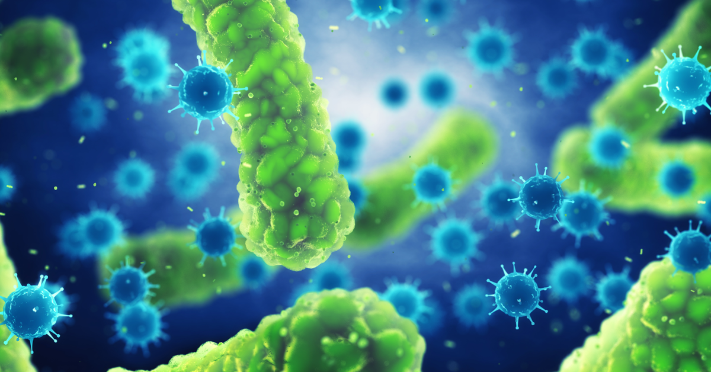
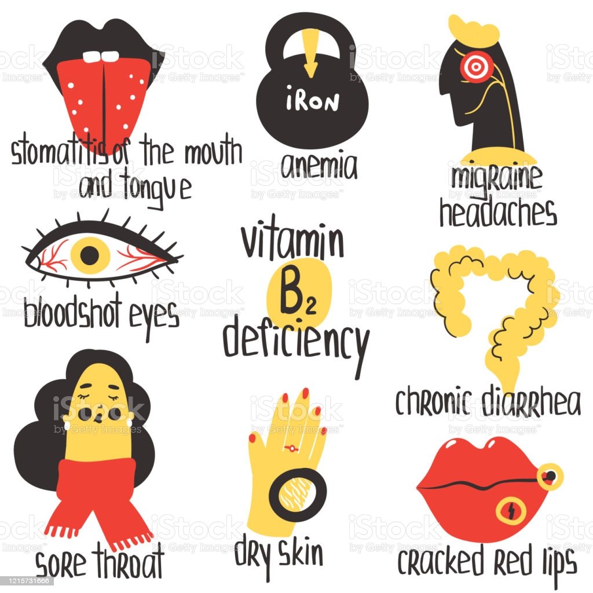

Welcome To My Website!!!
One Health - In this website you will get precations,symtoms of each diseases
and also few article,books,skills and Quotes
What is Disease ?
A disorder of structure or function in a human, animal, or plant,
especially one that produces specific symptoms or that affects a specific location
and is not simply a direct result of physical injury.A disease is a particular abnormal
condition that negatively affects the structure or function of all or part of an
organism, and that is not due to any immediate external injury. Diseases are often known
to be medical conditions that are associated with specific signs and symptoms.
Types of Diseases ?
There are four main types of disease: infectious diseases, deficiency diseases,
hereditary diseases (including both genetic diseases and non-genetic hereditary diseases),
and physiological diseases. Diseases can also be classified in other ways, such as communicable and
non-communicable diseases.
Infectious diseases
Infectious diseases are disorders caused by organisms — such as bacteria, viruses, fungi or parasites.
Many organisms live in and on our bodies. They're normally harmless or even helpful.
But under certain conditions, some organisms may cause disease. Some infectious
diseases can be passed from person to person.

Deficiency diseases
A deficiency disease can be defined as a disease which is caused by the lack of essential nutrients or dietary
elements such as vitamins and minerals in the human body.
Deficiency disease examples: Vitamin B1 deficiency causes beriberi, lack of iron in the
body can lead to anaemia.

Hereditary diseases
Image result for what is hereditary diseases.A hereditary disease is often described as something
that “runs in the family.” It is passed down from one or both parents to a child, who may then pass it
to his or her children.Examples of single gene inheritance disorders include: Cystic fibrosis.
Sickle-cell anemia. Marfan syndrome.
Physiological disease
A physiological disorder is an illness that interferes with the way that the functions of the.
body are carried out. Examples are: Diabetes, Alzheimer's, Parkinson's, rheumatoid arthritis,
asthma, leukemia, coronary heart. disease, any form of cancer.
Diseases can be grouped into two types:
Communicable
Non-Communicable
Communicable Diseases
A communicable disease is one that is spread from one person to
another through a variety of ways that include: contact with blood and bodily
fluids; breathing in an airborne virus; or by being bitten by an insect.
Non-Communicable Diseases
A non-communicable disease (NCD) is a disease that is not transmissible directly from
one person to another. NCDs include Parkinson's disease, autoimmune diseases, strokes,
most heart diseases, most cancers, diabetes, chronic kidney disease,cataracts, and others.
Diseases from A to Z
A
Abdominal Aortic Aneurysm — see Aortic Aneurysm
Acanthamoeba Infection
ACE (Adverse Childhood Experiences)
Acinetobacter Infection
Acquired Immune Deficiency Syndrome (AIDS) — see HIV
Acute Flaccid Myelitis (AFM)
Adenovirus Infection
Adenovirus Vaccination
ADHD [Attention Deficit/Hyperactivity Disorder]
Adult Vaccinations
Adverse Childhood Experiences (ACE)
African Trypanosomiasis — see Sleeping Sickness
Agricultural Safety — see Farm Worker Injuries
AHF (Alkhurma hemorrhagic fever)
AIDS (Acquired Immune Deficiency Syndrome)
Alkhurma hemorrhagic fever (AHF)
ALS [Amyotrophic Lateral Sclerosis]
Alzheimer's Disease
Amebiasis, Intestinal [Entamoeba histolytica infection]
Angiostrongylus Infection
Animal-Related Diseases
Anisakiasis — see Anisakis Infection
Anisakis Infection [Anisakiasis]
Anthrax Vaccination
Anthrax [Bacillus anthracis Infection]
Antibiotic-resistant Infections - Listing
Antibiotic and Antimicrobial Resistance
Antibiotic Use, Appropriate
Aortic Aneurysm
Aortic Dissection — see Aortic Aneurysm
Arenavirus Infections
Arthritis
Childhood Arthritis
Rheumatoid Arthritis (RA)
Ascariasis — see Ascaris Infection
Ascaris Infection [Ascariasis]
Aseptic Meningitis — see Viral Meningitis
Aspergillosis — see Aspergillus Infection
Aspergillus Infection [Aspergillosis]
Asthma
Atrial fibrillation (AFib, AF)
Attention Deficit/Hyperactivity Disorder
Autism
Avian Influenza
B
Babesia Infection
Babesiosis
Bacillus anthracis Infection
Back Belts
Bacterial Meningitis
Bacterial Vaginosis (BV)
Balamuthia Infection [Balamuthia mandrillaris Infection]
Balamuthia mandrillaris Infection
Balantidiasis
Balantidium Infection
Bartonella bacilliformis Infection
Bartonella henselae Infection
Bartonella Infection
Bartonella Quintana Infection
Baylisascaris Infection
Bilharzia
Bioterrorism Agents/Diseases
Bird Flu
Birth Defects
Black Lung [Coal Workers' Pneumoconioses]
Blastocystis hominis Infection
Blastocystis Infection [Blastocystis hominis Infection]
Blastomycosis [Blastomyces dermatitidis Infection]
Blood Clot
Blood Disorders
Body Lice [Pediculus humanus corporis]
>Borrelia burgdorferi Infection
Borreliosis, Louse-borne
Borreliosis, Tick-borne
Botulism [Clostridium botulinum Infection]
Bovine Spongiform Encephalopathy (BSE)
Brainerd Diarrhea
Breast and Ovarian Cancer and Family Health History
Breast Cancer
Breastfeeding
Bronchitis
Brucella Infection [Brucellosis]
Brucellosis — see Brucella Infection
Bunyavirus Infections
Burkholderia cepacia Infection (B. cepacia infection)
Burkholderia mallei — see Glanders
Burkholderia pseudomallei Infection — see Melioidosis
BV (Bacterial Vaginosis)
B virus Infection [Herpes B virus]
C
C. auris infection
C. diff. Infection [Clostridium difficile Infection]
C. gattii cryptococcosis
C. neoformans cryptococcosis
Campy (Campylobacter Infection)
Campylobacter Infection (Campy) [Campylobacteriosis]
Campylobacteriosis — see Campylobacter Infection
Cancer
Colorectal (Colon) Cancer
Gynecologic Cancers
Prostate Cancer
Skin Cancer
Cancer and Flu
see also Cancer
see also Influenza
Candida auris infection
Canine Flu
Capillaria Infection [Capillariasis]
Capillariasis — see Capillaria Infection
Carbapenem-resistant Enterobacterales (CRE)
Carbapenem resistant Klebsiella pneumonia (CRKP) — see Klebsiella pneumoniae
Cardiovascular Health — see Heart Disease
Carpal Tunnel Syndrome — see Ergonomic and Musculoskeletal Disorders
Carrion's disease — see Bartonella bacilliformis Infection
Cat Flea Tapeworm — see Tapeworm, Dog and Cat Flea
Cats, Infections from
Cat Scratch Disease — see Bartonella henselae Infection
Cat Scratch Disease from Pets
CCHF (Crimean-Congo hemorrhagic fever)
CDI (Chronic Disease Indicators)
Cercarial Dermatitis — see Swimmer'sItch
Cerebral Palsy
Cervical Cancer
Cervical Cancer Early Detection Program (NBCCEDP)
Chagas Disease [Trypanosoma cruzi Infection
Chapare Hemorrhagic Fever (CHHF)
Chest Cold — see Bronchitis
CHHF (Chapare Hemorrhagic Fever)
Chickenpox Vaccination
Coccidioidomycosis — see Valley Fever
Cold, Common
COVID-19 — see Coronavirus Disease 2019
D
Death, Leading Causes of Death in Males
Deep Vein Thrombosis (DVT)
Dementia — see Alzheimer's Disease
Dengue
Dermatophyte Infection — see Ringworm
Developmental Disabilities
Diabetes
Dientamoeba fragilis Infection
Diet and Nutrition — see Nutrition
Diphtheria Vaccination
Diphtheria [Corynebacterium diphtheriae Infection]
Diphyllobothriasis — see Diphyllobothrium Infection
Diphyllobothrium Infection [Diphyllobothriasis]
Dipylidium Infection — see Tapeworm, Dog and Cat Flea
Dirofilariasis (Dog Heartworm)
Division of Public Health Systems and Workforce Development (DPHSWD)
Dog Bites
Dog Flea Tapeworm — see Tapeworm, Dog and Cat Flea
Dog Heartworm — see Dirofilariasis (Dog Heartworm)
Dogs, Infections from
Down Syndrome [Trisomy 21]
DPHSWD — see Division of Public Health Systems and Workforce Development (DPHSWD)
Dracunculiasis — see Guinea Worm Disease
Drug Resistance — see Antibiotic and Antimicrobial Resistance
DVT (Deep Vein Thrombosis)
E
E. coli Infection [Escherichia coli Infection]
Ear Infection [Otitis Media]
Early Hearing Detection and Intervention (EHDI) — see Hearing, Early Detection & Intervention
Eastern Equine Encephalitis (EEE)
Ebola Virus Disease (EVD)
EBV Infection (Epstein-Barr Virus Infection)
Echinococcosis
EEE (Eastern Equine Encephalitis)
EHDI (Early Hearing Detection and Intervention)
Ehrlichiosis, Human
Elephantiasis — see Lymphatic Filariasis
Elizabethkingia Infection
Emerging Infectious Diseases
Endophthalmitis, Fungal — see Fungal Eye Infections
Entamoeba histolytica infection — see Amebiasis, Intestinal
Enteric Diseases from Animals — see Gastrointestinal Diseases from Animals
Enterobius vermicularis Infection — see Pinworm Infection
Enterovirus D68
Enterovirus Infections (Non-Polio) — see Non-Polio Enterovirus Infections
Epidemic Typhus — see Typhus Fevers
Epilepsy
Epstein-Barr Virus Infection (EBV Infection)
Ergonomic and Musculoskeletal Disorders
Escherichia coli Infection — see E. coli Infection
Esophageal Candidiasis — see Thrush
EV-D68 — see Enterovirus D68
EVD (Ebola Virus Disease)
Exserohilum rostratum (Other Pathogenic Fungi)
F
Falls, Older Adults
Family Health
Farm Animals, Infections from
Farm Worker Injuries
Fasciitis, Necrotizing — see Group A Strep Infection
Fasciola Infection [Fascioliasis]
Fascioliasis — see Fasciola Infection
Fasciolopsiasis — see Fasciolopsis Infectionv
Fasciolopsis Infection [Fasciolopsiasis]
Fetal Alcohol Spectrum Disordersv
Fibromyalgia
Fifth Disease [Parvovirus B19 Infection]
Filovirus Infections
Fish and Amphibians, Infections from
Flavivirus Infections
Flea-borne (Murine) Typhus — see Typhus Fevers
Flu Influenza
Folliculitis — see Hot Tub Rash
Foodborne Illnesses
Fragile X Syndrome (FXS)
Francisella tularensis Infection — see Tularemia
Fungal diseases [Mycotic diseases]
G
GAE (Granulomatous amebic encephalitis)
GAS (Group A Strep Infection)
Gastrointestinal Diseases from Animals [Zoonotic enteric diseases]
GBS (Group B Strep Infection)
GDDER (Global Disease Detection and Emergency Response)
Genetics and Colorectal Cancer — see Colorectal Cancer and Genetic
Genetics and Heart Disease — see Heart Disease and Genetics
Genetics and Mental Health — see Mental Health and Genetics
Genetics and Obesity — see Obesity and Genetics
Genetics and Skin Cancer — see Skin Cancer and Genetics
Genital Candidiasis (VVC) [Vulvovaginal Candidiasis]
Genital Herpes [Herpes Simplex Virus Infectio
Genital Warts — see Human Papillomavirus Infection
German Measles (Rubella Virus)
Giardia Infection [Giardiasis]
Giardiasis — see Giardia Infection
Glanders [Burkholderia mallei]
Global Disease Detection and Emergency Response (GDDER)
Global Measles Elimination
Gnathostoma Infection — see Gnathostomiasis
Gnathostomiasis [Gnathostoma Infection]
Gonorrhea [Neisseria gonorrhoeae Infection]
Gout
Granulomatous Amebic Encephalitis (Acanthamoeba) (GAE (Acanthamoeba))
Granulomatous amebic encephalitis (GAE)
Gynecologic Cancers
H
H5N1 — see Avian Influenza
HAB (Harmful Algal Bloom (HAB)-Associated Illness)
Haemophilus influenzae Serotype b — see Hib Infection
Hand, Foot, and Mouth Disease (HFMD)
Hansen's Disease
Hantavirus Pulmonary Syndrome (HPS)
Harmful Algal Bloom (HAB)-Associated Illness (HAB)
Hazardous Drug Exposures in Healthcare
Head Lice [Pediculus humanus capitis]
Healthcare-associated Infections
Health Disparities in HIV/AIDS, Viral Hepatitis, STDs, and TB
Health Security — see Global Health Security
Healthy Pets, Healthy People — see Animal-Related Diseases
Healthy Weight
Hearing, Early Detection & Intervention
Hearing impairment — see Hearing loss, environmental
Hearing loss, environmental [Hearing impairment]
Hearing Loss in Children
Heart Disease [Cardiovascular Health]
Heartland Virus Infection
Heat Stress
Hemoglobinopathies
Hemophilia
Hemophilia Treatment Centers (HTC)
Hemorrhagic Fevers, Viral — see Viral Hemorrhagic Fevers
Hendra Virus Disease (HeV Infection)
Hepatitis, Viral — see Viral Hepatitis
Hepatitis A Vaccination
Hereditary Bleeding Disorders — see Hemophilia
Herpes, Genital — see Genital Herpes
Herpes B virus — see B virus Infection
Herpes Simplex Virus Infection — see Genital Herpes
Herpesvirus B — see B virus Infection
Herpesvirus simiae — see B virus Infection
Herpes Zoster — see Shingles
Heterophyes Infection [Heterophyiasis]
Heterophyiasis — see Heterophyes Infection
HFMD (Hand, Foot, and Mouth Disease)
Hib Infection [Haemophilus influenzae Serotype b]
High Blood Pressure
Histoplasmosis — see Histoplasma capsulatum Infection
HIV
Hookworm, Zoonotic — see Zoonotic Hookworm
Hot Tub Rash [Pseudomonas dermatitis Infection]
HPV Infection (Human Papillomavirus Infection)
HTC (Hemophilia Treatment Centers)
Human Ehrlichiosis — see Ehrlichiosis, Human
Hymenolepis Infection — see Dwarf Tapeworm
I
IBD (Inflammatory Bowel Disease)
IMMPaCt (International Micronutrient Malnutrition Prevention and Control Program)
Impetigo — see Group A Strep Infection
Infectious Mononucleosis — see Epstein-Barr Virus Infection
Infertility
Influenza
Influenza Vaccination
Injury, Healthy Swimming and Recreational Water
Intellectual Disability
International Micronutrient Malnutrition Prevention & Control Program (IMMPaCt)
Intestinal Amebae Infection, Nonpathogenic — see Nonpathogenic (Harmless) Intestinal Protozoa
Invasive Candidiasis
J
Jamestown Canyon Virus Infection
Japanese Encephalitis (JE)
Jaundice — see Newborn Jaundice
K
K. pneumoniae (Klebsiella pneumoniae)
Kala-Azar — see Leishmania Infection
Kawasaki Disease (KD)
Kawasaki Syndrome — see Kawasaki Disease
KD (Kawasaki Disease)
Keratitis, Acanthamoeba — see Acanthamoeba Infection
Keratitis, Fungal — see Fungal Eye Infections
Kernicterus — see Newborn Jaundice
KFD (Kyasanur Forest disease)
Kidney Disease (CKD)
Klebsiella pneumoniae (K. pneumoniae)
Kyasanur Forest disease (KFD)
L
LAC (La Crosse Encephalitis)
La Crosse Encephalitis (LAC)
La Crosse Encephalitis virus (LACV) — see La Crosse Encephalitis
LACV (La Crosse Encephalitis virus)
Lassa Fever
Latex Allergies
LBRF (Relapsing Fever, Louse-borne)
LCM (Lymphocytic Choriomeningitis)
Lead Poisoning
Legionellosis — see Legionnaires' Disease
Legionnaires' Disease [Legionellosis]
Leishmania Infection [Leishmaniasis]
Leishmaniasis — see Leishmania Infection
Leprosy — see Hansen's Disease
Leptospira Infection [Leptospirosis]
Leptospirosis — see Leptospira Infection
Lice
Listeriosis — see Listeria Infection
Liver Disease and Hepatitis — see Viral Hepatitis
Loa loa Infection — see Loiasis
Lockjaw — see Tetanus Disease
Lockjaw Vaccination — see Tetanus (Lockjaw) Vaccination
Loiasis [Loa loa Infection]
Lou Gehrig's Disease — see ALS
Louse-borne Relapsing Fever — see Relapsing Fever, Louse-borne
LUHF (Lujo Hemorrhagic Fever)
Lung Cancer
Lupus (SLE) [Systemic lupus erythematosus]
Lyme Disease [Borrelia burgdorferi Infection]
Lymphatic Filariasis
Lymphedema — see Lymphatic Filariasis
Lymphocytic Choriomeningitis (LCM)
M
MAC (Mycobacterium avium Complex)
Mad Cow Disease (BSE) — see Bovine Spongiform Encephalopathy
Malaria
Marburg Hemorrhagic Fever
Marine Toxins
MD (Muscular Dystrophy)
ME/CFS (Myalgic Encephalomyelitis/ Chronic Fatigue Syndrome)
Measles
Melioidosis [Burkholderia pseudomallei Infection]
Mental Health and Genetics
Microsporidia Infection
Middle East Respiratory Syndrome Coronavirus (MERS-CoV)
Molluscum Contagiosum
Monkey B virus — see B virus Infection
Monkeypox
Mononucleosis, Infectious — see Epstein-Barr Virus Infection
Motor Vehicle Injuries
Mouse and Rat Control — see Rodents, Diseases from
MRSA [Methicillin Resistant Staphylococcus aureus]
Mucormycosis
Mucus — Cold, Common
Multidrug-Resistant
Multiple organ dysfunction syndrome — see Sepsis
Mumps
Murine
Muscular Dystrophy
Musculoskeletal Disorders — see Ergonomic and Musculoskeletal Disorders
Myalgic Encephalomyelitis/ Chronic Fatigue Syndrome (ME/CFS)
Mycobacterium abscessus Infection
Myiasis
N
Naegleria Infection [Primary Amebic Meningoencephalitis (PAM)]
Nairovirus Infection — see Crimean-Congo hemorrhagic fever
National Amyotrophic Lateral Sclerosis (ALS) Registry — see ALS
Necrotizing Fasciitis — see Group A Strep Infection
Neglected Tropical Diseases (NTD)
Neisseria gonorrhoeae Infection — see Gonorrhea
Neurocysticercosis — see Cysticercosis
Newborn Hearing — see Hearing, Early Detection & Intervention
Newborn Jaundice [Kernicterus]
Nocardia asteroides Infection — see Nocardiosis
Non-Polio Enterovirus Infections
Nonpathogenic (Harmless) Intestinal Protozoa
Norovirus Infection
Norwalk-like Viruses (NLV) — see Norovirus Infection
Nutrition
O
OA (Osteoarthritis)
Obesity and Genetics
Occupational Cancers
OHF (Omsk hemorrhagic fever)
Omsk hemorrhagic fever (OHF)
Onchocerciasis — see River Blindness
Opisthorchis Infection
Oral Cancer
Orf Virus Infection — see Sore Mouth Infection
Oropharyngeal Candidiasis — see Thrush
Osteoarthritis (OA)
Otitis Media — see Ear Infection
Outbreaks
Ovarian Cancer
Overweight and Obesity — see Obesity and Overweight
Overweight and Obesity, Childhood — see Childhood Overweight and Obesity
P
PAD (Peripheral Arterial Disease)
Pandemic Flu
Paragonimiasis
Parainfluenza — see Human Parainfluenza Viruses
Parasitic Diseases
PCP (Pneumocystis pneumonia)
PCV (Pneumococcal Conjugate Vaccine)
PE (Pulmonary Embolism)
Pedestrian Injury
Pediculus humanus capitis — see Head Lice
Pelvic Inflammatory Disease (PID)
People at High Risk
Peripheral Arterial Disease (PAD)
Phthiriasis — see Pubic Lice
PID (Pelvic Inflammatory Disease)
Pigs, Influenza in — see Swine Influenza
Pink Eye [Conjunctivitis]
Pinworm Infection [Enterobius vermicularis Infection]
Plague [Yersinia pestis Infection]
Pneumonia
Polio Infection [Poliomyelitis Infection]
Pontiac Fever — see Legionnaires' Disease
Powassan (POW) virus
Poxvirus Infections
Pregnancy
Primary Amebic Meningoencephalitis (PAM) — see Naegleria Infection
Prion Diseases (TSEs) [Transmissible spongiform encephalopathies]
Prostate Cancer
Pseudomonas aeruginosa Infection
Psittacosis [Chlamydia psittaci Infection]
Psoriasis
Pubic Lice [Phthiriasis]
Pulmonary Hypertension
Q
Q Fever [Coxiella burnetii Infection]
R
RA (Rheumatoid Arthritis)
Raccoon Roundworm Infection [Baylisascaris Infection]
Rat-Bite Fever (RBF) [Streptobacillus moniliformis Infection]
Recalled Vaccines
Recreational Water Illnesses (RWI)
Relapsing Fever, Louse-borne (LBRF)
Relapsing Fever, Tick-borne (TBRF)
Reptiles, Infections from
Respiratory Syncytial Virus Infection (RSV)
Rheumatoid Arthritis (RA)
Rickettsia, Spotted Fever Group — see Spotted Fever Group Rickettsia
Rickettsial Diseases
Rickettsia rickettsii Infection — see Rocky Mountain Spotted Fever
Rift Valley Fever (RVF)
Ringworm from Animals
Ringworm [Dermatophyte Infection]
River Blindness [Onchocerciasis]
RMSF (Rocky Mountain Spotted Fever)
Rocky Mountain Spotted Fever (RMSF) [Rickettsia rickettsii Infection]
Rodent Control — see Rodents, Diseases from
Rodents — see Rat-Bite Fever
Rodents, Diseases from
Rotavirus Infection
Rotavirus Vaccination
RSV (Respiratory Syncytial Virus Infection)
Rubella (German Measles) Vaccination
Rubeola — see Measles
Runny Nose — see Cold, Common
RWI (Recreational Water Illnesses)
S
Salmonella Infection from Animals
Sappinia diploidea and Sappinia pedata — see Sappinia Infection
Sappinia Infection [Sappinia diploidea and Sappinia pedata]
SARS [Severe Acute Respiratory Syndrome]
Scabies
Scarlet Fever [Group A Strep Infection]
Schistosoma Infection — see Schistosomiasis
Schistosomiasis [Schistosoma Infection]
Screening for Critical Congenital Heart Defects
Scrub Typhus — see Typhus Fevers
Seasonal Flu
Smoking and Tobacco Use
Sodium — see Salt
Soil Transmitted Helminths
Sore Throat
Southern Tick-Associated Rash Illness (STARI)
Spina Bifida [Myelomeningocele]
Spirillum minus Infection — see Rat-Bite Fever
Sporothrix schenckii infection — see Sporotrichosis
Sporotrichosis [Sporothrix schenckii infection]
Systemic lupus erythematosus — see Lupus
T
Taenia Infection — see Tapeworm Infection
Tapeworm, Dog and Cat Flea
Systemic lupus erythematosus — see Lupus
Tapeworm Infection [Taenia Infection]
TBRF (Relapsing Fever, Tick-borne)
TB Testing & Diagnosis
Tetanus (Lockjaw) Infection
Thalassemia — see Cooley's Anemia
Thrush [Oropharyngeal Candidiasis]
Tick-borne Relapsing Fever — see Relapsing Fever, Tick-borne
Tickborne Diseases — see Ticks
Tularemia [Francisella tularensis Infection]
see also Ticks
Tinea — see Ringworm
Tobacco Use, Smoking and — see Smoking and Tobacco Use
Tourette Syndrome (TS)
Toxocara Infection — see Toxocariasis
Trachoma Infection
Treponema pallidum Infection — see Syphilis
Trichinellosis (Trichinosis)
TSEs (Prion Diseases)
Tuberculosis
Typhoid Fever
Typhus Fevers
U
Ulcerative Colitis — see Inflammatory Bowel Disease
Undulant Fever — see Brucella Infection
Unexplained Respiratory Disease Outbreaks (URDO)
Universal Newborn Hearing Screening — see Hearing, Early Detection & Intervention
URDO (Unexplained Respiratory Disease Outbreaks)
Uterine Cancer
V
Vaginal and Vulvar Cancers
Vaginal Candidiasis — see Genital Candidiasis
Valley Fever [Coccidioidomycosis]
Vancomycin-Intermediate/Resistant Staphylococcus aureus Infections [VISA/VRSA]
Vancomycin-resistant Enterococci Infection (VRE)
Variant Creutzfeldt-Jakob Disease (vCJD)
Variant Viruses - see Influenza
Varicella-Zoster Virus Infection
Varicella Disease — see Chickenpox
Varicella Vaccination — see Chickenpox Vaccination
Varicella Zoster Virus (VZV) — see Shingles
Variola Major Virus Infection — see Smallpox
Variola Minor Virus Infection — see Smallpox
vCJD (Variant Creutzfeldt-Jakob Disease)
>Vector-borne Diseases
VHF (Viral Hemorrhagic Fevers)
Vibrio cholerae Infection — see Cholera
Vibrio Illness [Vibriosis]
Vibriosis — see Vibrio Illness
Viral Hemorrhagic Fevers (VHF)
Viral Hepatitis
Viral Meningitis
see also Meningitis
Vision Impairment
Von Willebrand Disease — see VWD
VRE (Vancomycin-resistant Enterococci Infection)
Vulvovaginal Candidiasis — see Genital Candidiasis
VVC (Genital Candidiasis)
VWD [Von Willebrand Disease]
VZV (Varicella Zoster Virus)
W
Water-related Topics
Weight, Healthy — see Healthy Weight
West Nile Virus Infection (WNV Infection)
Whipworm Infection [Trichuriasis]
Whitmore's Disease — see Melioidosis
Whooping Cough — see Pertussis (Whooping Cough)
Whooping Cough (Pertussis) Vaccination
Wildlife, Infections from
Winter Storms — see Extreme Cold
WNV Infection (West Nile Virus Infection)
Women's Health
X
XDR TB (Extensively Drug-Resistant TB)
Y
Yeast Infection — see Genital Candidiasis
Yellow Fever
Yellow Fever Vaccination
Yersinia enterocolitica Infection — see Yersiniosis
Yersinia pestis Infection — see Plague
Yersiniosis [Yersinia enterocolitica Infection]
Z
Zika Virus Infection
Zoonotic enteric diseases — see Gastrointestinal Diseases from Animals
Zoonotic Hookworm
Zoster — see Shingles
Zygomycosis — see Mucormycosis